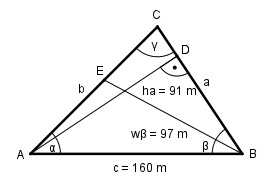

Aufgabe 147 Berechnen Sie die Seite b, wenn c = 160 m, ha = 91 m unddie Winkelhalbierende wβ = 97 m.

Im Dreieck ABD: hβ 91 m sin β = ----- = ------- = 0,5688 --> β = 34,7° c 160 m Im Dreieck ABE: Fall SWS: Cosinussatz: AE2 = c2 + wβ2 - 2 * c * wβ * cos β/2 AE2 = 1602 m2 + 972 m2 - 2*160 m*97 m*cos(34,7/2)° AE2 = 1602 m2 + 972 m2 - 2 * 160 m * 97 m * 0,9545 AE2 = 5 381,3 |√ AE = 73,4 m Fall SSW: Sinussatz: wβ AE ------- = --------- |*sin α sin α sin β/2 AE * sin α wβ = ------------- |*sin β/2 sin β/2 wβ * sin β/2 = AE * sin α |:AE wβ * sin β/2 sin α = -------------- = AE 97 m * sin (34,7/2)° 97 m * 0,2982 = ---------------------- = --------------- = 73,4 m 73,4 m sin α = 0,3941 --> α = 23,2° γ = 180° - α – β = 180° - 23,2° - 34,7° = 122,1° Im Dreieck ABC: Fall SSW: b c ----- = ------ |*sin β sin β sin γ c * sin β 160 m * sin 34,7° b = ----------- = ------------------- = sin γ sin 122,1° 160 m * 0,5693 = ---------------- = 107,5 m 0,8471